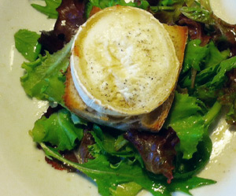

Chevre chaud
5 von 6toastbrot mit wenig olivenöl beträufeln und mit je einer scheibe chevre belegen und pfeffern.
in den ofen bis der toast schön knusprig wird. auf einem grünen salat servieren.

toastbrot mit wenig olivenöl beträufeln und mit je einer scheibe chevre belegen und pfeffern.
in den ofen bis der toast schön knusprig wird. auf einem grünen salat servieren.

Montagsplausch Nr. 334. Der Abend hiess «Castello di Verduno».